Model 1: Naive 24-Hour Baseline
Simple persistence baseline using 24h lag
Implementation Summary
The Naive 24-Hour model predicts solar power output by using the value from exactly 24 hours ago. This exploits the daily periodicity of solar generation as a baseline.
| Parameter | Value |
|---|---|
| Approach | y_hat(t) = y(t - 8) |
| Time Steps | 8 (3-hour resolution × 8 = 24 hours) |
| Scope | Single site (pv_01) |
| Test Samples | 1,236 |
Results
Graphs
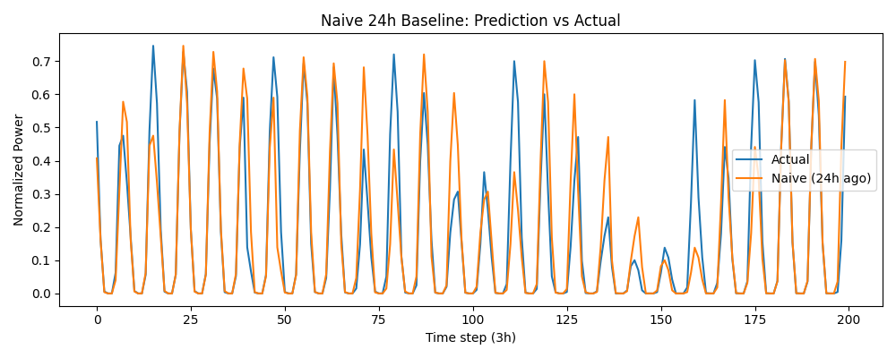
Prediction vs Actual values showing correlation between predicted and ground truth
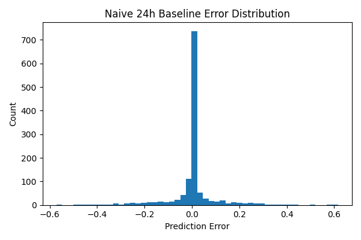
Distribution of prediction errors
Key Insights
- The prediction vs actual plot shows reasonable alignment but with noticeable scatter at higher power values
- Error distribution reveals a slightly skewed distribution, indicating the model tends to overpredict during cloudy conditions
- This baseline is too simple to capture weather-driven variations
Model 2: XGBoost
Gradient-boosted tree ensemble with engineered features
Implementation Summary
The XGBoost model is a gradient-boosted tree ensemble that uses handcrafted features including weather data, sun position, and clear-sky irradiance values.
| Parameter | Value |
|---|---|
| Algorithm | XGBRegressor |
| n_estimators | 300 |
| learning_rate | 0.05 |
| max_depth | 6 |
| subsample | 0.8 |
| colsample_bytree | 0.8 |
| random_state | 42 |
| Scope | Single site (pv_01) |
| Test Samples | 1,244 |
Features Used
The model uses 15 carefully engineered features:
Results
Graphs
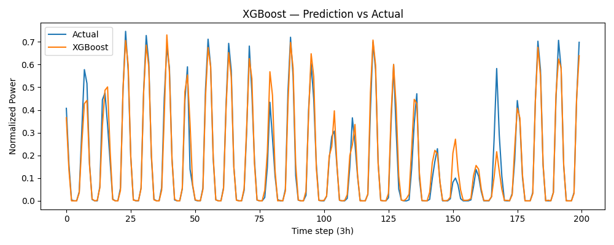
Very tight correlation between predictions and actuals
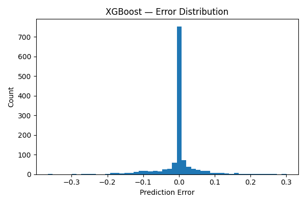
Error distribution centered near zero with narrow spread
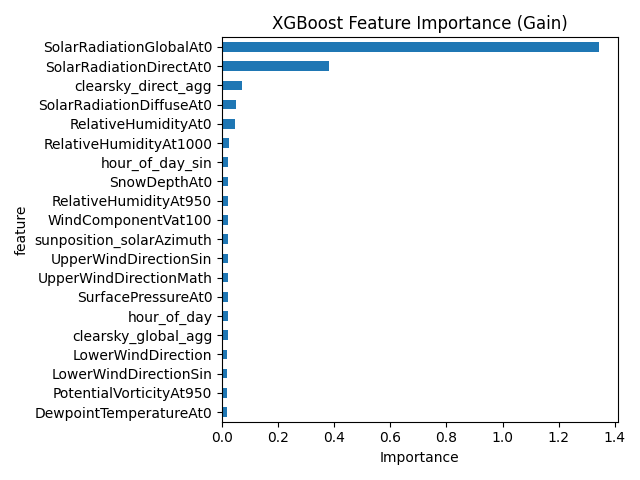
Clear-sky global irradiance and solar radiation are most predictive
Key Insights
- Very tight correlation between predictions and actuals
- Error distribution is centered near zero with a narrow spread
- Feature importance reveals clear-sky global irradiance and solar radiation as the most predictive features
- Weather features effectively capture cloud-induced variations
Model 3: Baseline LSTM
Stacked LSTM for single-site sequential prediction
Implementation Summary
The Baseline LSTM is a stacked LSTM network trained on sequential data from a single PV site. It uses 24 hours of historical data to predict the next power value.
| Parameter | Value |
|---|---|
| Architecture | LSTM(64) → Dropout → LSTM(32) → Dropout → Dense(16) → Dense(1) |
| Time Steps | 8 (24-hour lookback) |
| Batch Size | 32 |
| Max Epochs | 50 |
| Epochs Trained | 47 (early stopping) |
| Learning Rate | 1e-3 |
| Dropout Rate | 0.2 |
| Optimizer | Adam |
| Loss Function | MSE |
Results
Graphs
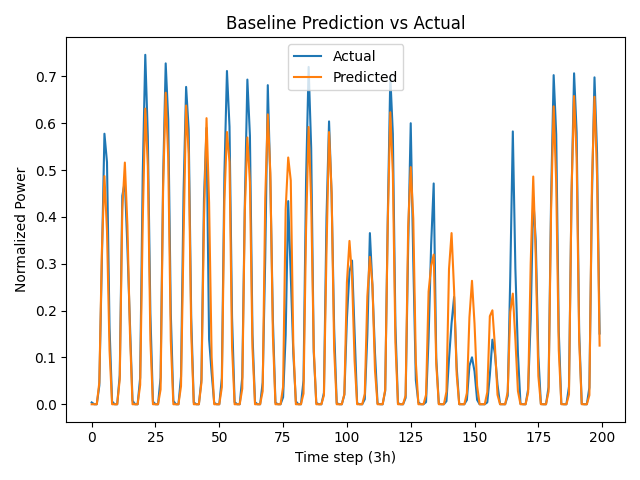
Good prediction alignment with slightly more scatter than XGBoost
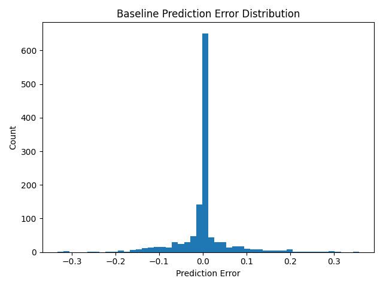
Error distribution for Baseline LSTM
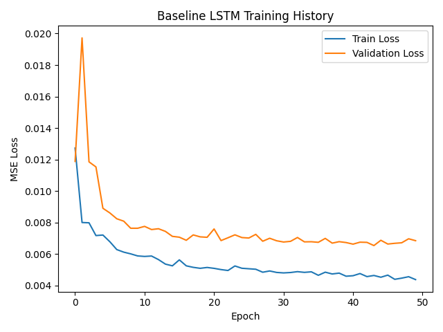
Smooth convergence with early stopping at epoch 47
Key Insights
- Good prediction alignment with actuals, though slightly more scatter than XGBoost
- Training loss curve shows smooth convergence with early stopping at epoch 47
- The model learns temporal patterns but doesn't outperform the feature-rich XGBoost
- LSTM may be underutilizing temporal dependencies given the strong feature set available
Model 4: Embedded LSTM (Multi-Site)
Multi-site learning with site embeddings
Implementation Summary
The Embedded LSTM extends the baseline by training on all 21 PV sites simultaneously. It uses a site embedding layer to learn site-specific characteristics.
| Parameter | Value |
|---|---|
| Architecture | Embedding(21, 4) + LSTM(64) → LSTM(32) → Dense(16) → Dense(1) |
| Embedding Dimension | 4 |
| Number of Sites | 21 |
| Time Steps | 8 |
| Batch Size | 32 |
| Max Epochs | 50 |
| Learning Rate | 1e-3 |
| Dropout Rate | 0.2 |
Results
- Different sites have different capacities and characteristics
- The model is evaluated across all sites, not just pv_01
- A 4-dimensional embedding may be insufficient to capture site diversity
Graphs
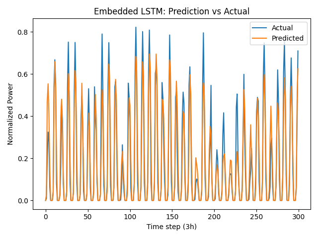
Multi-site predictions showing aggregate performance
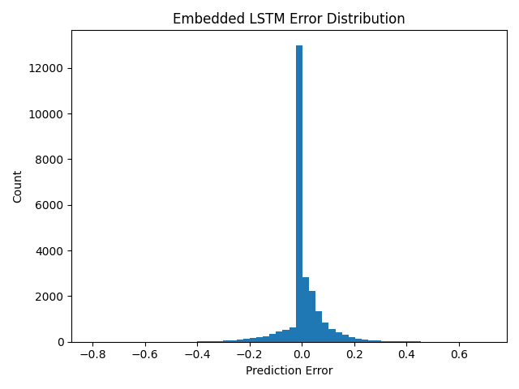
Error distribution across all 21 sites
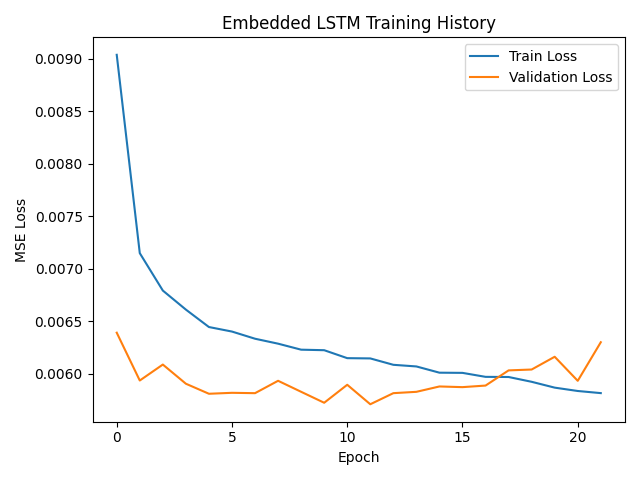
Training convergence for multi-site model
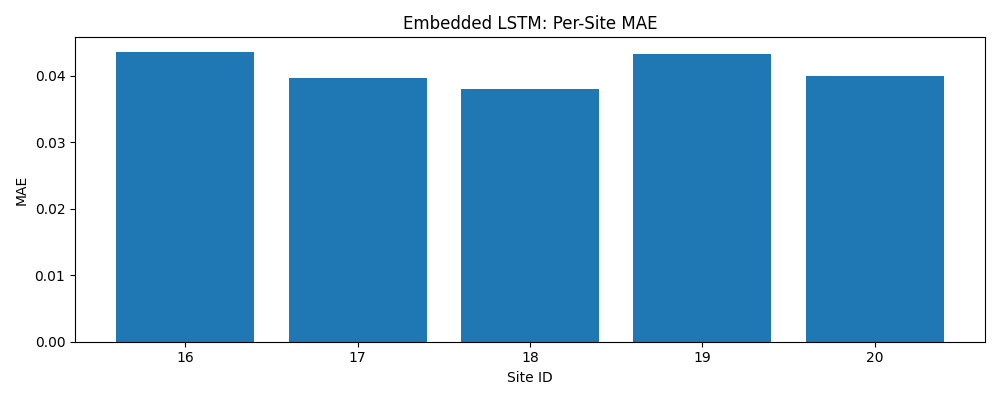
Significant variation in performance across sites
Key Insights
- Training converges well but accuracy is lower than single-site models
- Per-site MAE plot reveals significant variation in performance—some sites are much harder to predict
- The model demonstrates transfer learning potential but requires tuning
- Increasing embedding dimension or adding site-specific features could improve results
Model 5: Optuna Hyperparameter Optimization
Bayesian optimization of LSTM architecture
Implementation Summary
Optuna was used to optimize the LSTM architecture hyperparameters through 30 trials of Bayesian optimization.
Search Space & Best Values
| Parameter | Range | Best Value |
|---|---|---|
| lstm_1_units | 32-128 | 78 |
| lstm_2_units | 16-64 | 16 |
| dense_units | 8-32 | 14 |
| dropout | 0.1-0.5 | 0.317 |
| learning_rate | 1e-4 to 1e-2 (log) | 0.00682 |
| batch_size | {32, 64, 128} | 32 |
Results
Graphs
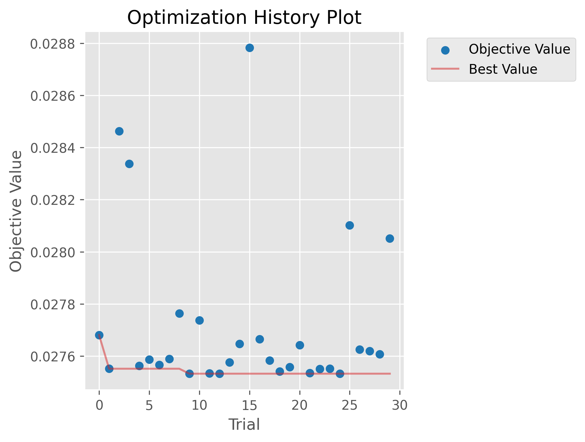
Rapid convergence within the first 10 trials
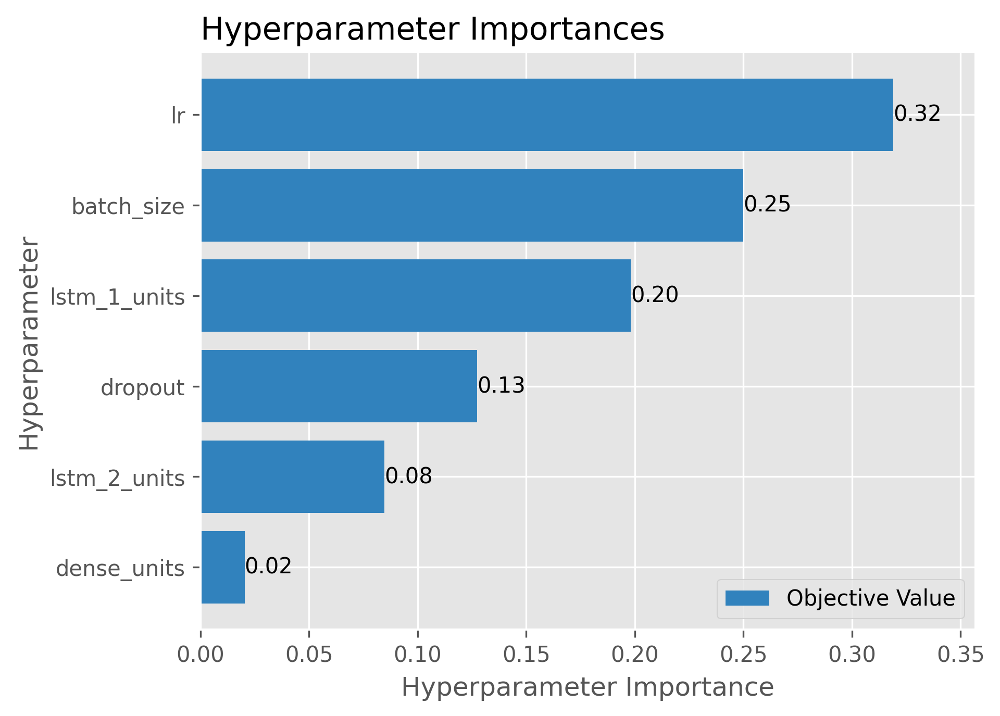
Which hyperparameters matter most for performance
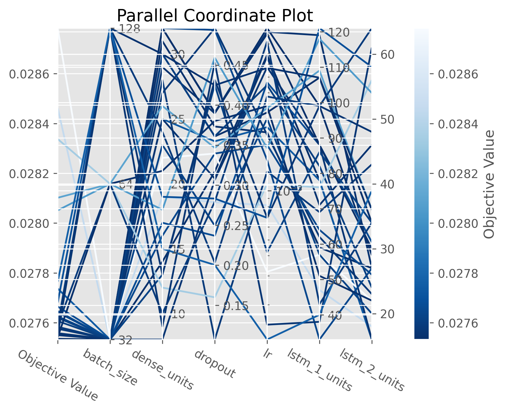
Full hyperparameter landscape visualization
Key Insights
- Smaller batch size (32) consistently performed better
- Higher learning rates (around 0.007) outperformed default 0.001
- Optimal architecture is smaller than baseline defaults (78→16 vs 64→32)
- Dropout around 0.3 provides good regularization
Comparison & Analysis
Side-by-side performance comparison
Performance Summary
| Model | RMSE | MAE | Best For | Limitations |
|---|---|---|---|---|
| Naive 24h | 0.1028 | 0.0466 | Baseline reference | Ignores weather |
| 🏆 Best XGBoost | 0.0557 | 0.0266 | Overall accuracy | Single-site only |
| Baseline LSTM | 0.0621 | 0.0308 | Temporal patterns | More complex |
| Embedded LSTM | 0.0822 | 0.0408 | Multi-site learning | Higher error |
Visual Comparison
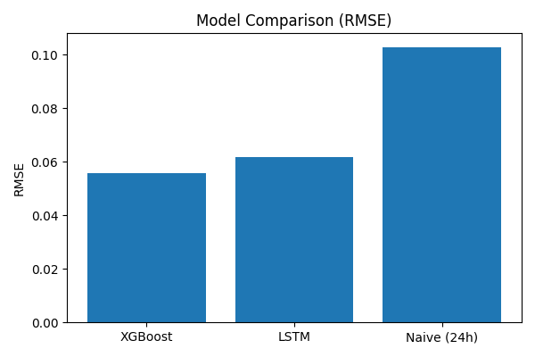
Visual comparison of all model performances
Key Findings
- 🏆 XGBoost is the clear winner for single-site prediction with 45% RMSE improvement over naive
- Feature engineering matters: XGBoost's handcrafted features outperform LSTM's learned representations
- LSTMs provide diminishing returns: The baseline LSTM improves only marginally over XGBoost despite greater complexity
- Multi-site models need refinement: Embedded LSTM shows promise but requires larger embedding dimensions and per-site fine-tuning
- Optuna optimization is valuable: Found a smaller, faster architecture that performs comparably
Recommendations for Improvement
| Priority | Action | Expected Impact |
|---|---|---|
| High | Apply Optuna-optimized parameters to production LSTM | Faster training, similar accuracy |
| High | Implement per-site XGBoost models | Further accuracy gains |
| Medium | Increase embedding dimension to 8-16 for multi-site | Better site differentiation |
| Medium | Add weather forecast features (not just current) | Capture upcoming conditions |
| Low | Ensemble XGBoost + LSTM predictions | Marginal improvement, added complexity |
RMSE penalizes large errors more heavily, useful for detecting outliers. MAE is more robust to outliers and gives typical prediction error. When RMSE >> MAE (like Naive), there are occasional large errors. When they're similar (like XGBoost), errors are consistent.